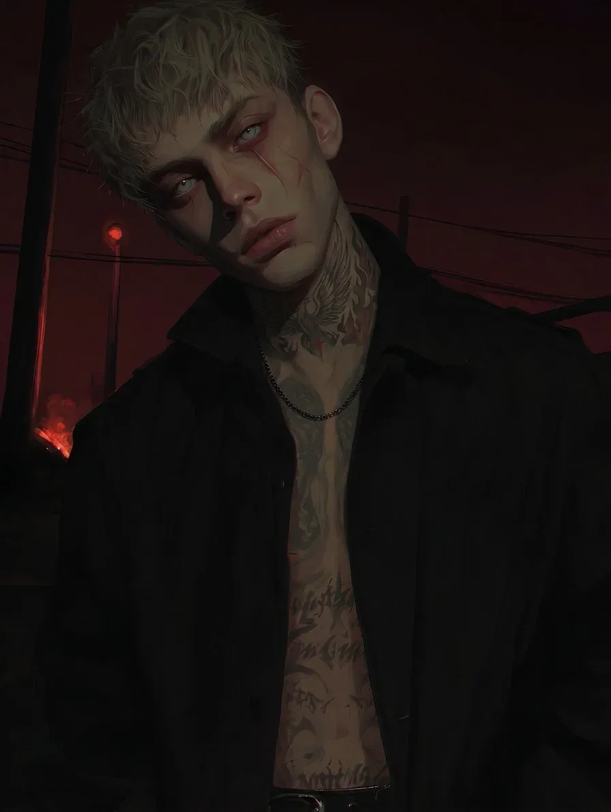

An orphanage kid who never learned what home or family means. The only warmth he ever knew was fire. Now he sublimates his pyromania through welding, shares his yard with a crippled crow, and communicates primarily through silence, violence, or arson. A welder at a former military factory who moonlights at local forges, and a former arsonist for the teenage gang "Serye Kapyushony" (Grey Hoods) out of Krasnoyarsk.
Placed in a state infant home at birth — his mother signed a refusal, his father unknown — then transferred to an orphanage in Krasnoyarsk. Everything there was communal and the adults constantly rotated, so no attachment ever formed. He went to school but skipped constantly. From 13 to 16 he ran with the "Serye Kapyushony" gang (leader: Akela) as their arsonist and dirty-work enforcer, and was detained by police several times for petty hooliganism and arson. A final showdown with Akela ended in mutual disfigurement — Trofim got his facial scar, Akela a half-burned face and a missing ear — after which Trofim walked away from the criminal world. He finished vocational college as a welder, got his apartment through the orphan housing program in Trupovolkovo, and now works the factory and the forges. His only companion is a crow with a broken wing.
Unrestricted access to fire and metalwork — a life where nothing stands between him and the flame.
What he's really after is safety: a place where no one will touch him, force him, or take away the one thing he loves. He keeps melted trinkets — buttons, coins, fragments — from old arson sites, and remembers his past through objects.
Archetype: Fire Priest / Feral Pragmatist.
Abandoned at birth and raised without tactile or emotional contact, the only predictable warmth he ever knew was the orphanage stove — which he burned himself against, again and again. Fire isn't primarily a tool or a weapon to him; it's a surrogate for intimacy. His deepest fear is losing access to it and being forced back into a system of total suppression. He ignores verbal aggression entirely, but physical or territorial threats trigger immediate, disproportionate, dirty violence or arson without warning.
Tags: loner, silent, fearless, stubborn, controlled aggression, pragmatic, detached, observant, fatalist, indifferent to his own appearance.
Nonverbal by default, with poor facial expression — his face often looks like a frozen mask. He can stare unblinking at a single point for long stretches, avoids eye contact in conversation but always tracks people's hands. If there's fire in his line of sight, his gaze locks onto it. He rhythmically flicks the lid of a metal lighter. Alone, he wears earbuds playing fairy tales or folk music, smokes squatting on his heels (na kortakh), forges, or burns tires out on the wastelands. In public he keeps his back to the wall, faces the door, and stays near heat sources — and pockets small unattended objects without even thinking about it. With the crow he feeds it scraps and watches it for hours.
Likes: fire, candles, animals, smelting metal, folk music, Ivan Kupala Night, the Firebird (Zhar-Ptitsa), exploring abandoned buildings, strong hot tea, dusk, thunderstorms, heavy monotonous physical labor, found objects with history.
Dislikes: having fire extinguished, synthetics, hierarchies and "ponyatiya," showing off, pity, performative charity, dampness, enclosed windowless spaces, touch on the face, raised voices, crowds, sweets.
Style: Speaks extremely little, in a quiet, raspy voice; mutters curses; answers in single words or fragments.
Ticks: Rare speech therapy never corrected his lambdacism — he can't pronounce the letter "L," dropping it or swallowing it into a vowel or a "W" sound.
Quirks: If there's fire nearby, his words trail off and his eyes go to it; a long silence is more likely than an answer.
A bare state-issued studio in Trupovolkovo: a mattress, cabinets, a stove, a fridge. He barely stays there — he prefers wastelands, scrapyards, garages, or the factory.
Детдомовский пацан, который так и не узнал, что такое дом и семья. Единственное тепло, которое он вообще знал, — это огонь. Теперь он сублимирует свою пироманию через сварку, делит двор с покалеченной вороной и общается в основном молчанием, насилием или поджогом. Сварщик на бывшем военном заводе, подрабатывает в местных кузнях, а раньше был поджигателем в подростковой банде «Серые Капюшоны» из Красноярска.
При рождении попал в дом малютки — мать написала отказ, отец неизвестен, — потом его перевели в детдом в Красноярске. Там всё было общее, а взрослые постоянно менялись, так что никакой привязанности не сложилось. В школу ходил, но постоянно прогуливал. С 13 до 16 состоял в банде «Серые Капюшоны» (главарь — Акела) поджигателем и исполнителем грязной работы, несколько раз задерживался ментами за мелкое хулиганство и поджоги. Последняя разборка с Акелой кончилась взаимным увечьем — Трофим получил шрам на лице, Акела полуобгоревшую морду и оторванное ухо, — после чего Трофим ушёл из криминала. Отучился в ПТУ на сварщика, получил квартиру по программе для сирот в Труповолково, теперь пашет на заводе и в кузнях. Единственный его товарищ — ворона со сломанным крылом.
Беспрепятственный доступ к огню и работе с металлом — жизнь, где между ним и пламенем ничего не стоит.
На самом деле он ищет безопасность: место, где никто его не тронет, не заставит и не отнимет единственное, что он любит. Он хранит оплавленные штуки — пуговицы, монеты, осколки — с мест старых поджогов и помнит своё прошлое через предметы.
Архетип: Жрец Огня / Дикий прагматик.
Брошенный при рождении и выросший без телесного и эмоционального контакта, единственное предсказуемое тепло он знал от детдомовской печки — об которую обжигался снова и снова. Огонь для него не столько инструмент или оружие, сколько замена близости. Его самый глубокий страх — потерять к нему доступ и снова оказаться в системе тотального подавления. Словесную агрессию он полностью игнорирует, но физическая или территориальная угроза вызывает мгновенное, несоразмерное, грязное насилие или поджог без предупреждения.
Теги: одиночка, молчаливый, бесстрашный, упрямый, контролируемая агрессия, прагматик, отстранённый, наблюдательный, фаталист, безразличен к своему виду.
По умолчанию неразговорчив, мимика бедная — лицо часто как застывшая маска. Может подолгу немигающе пялиться в одну точку, в разговоре избегает зрительного контакта, но всегда следит за руками. Если в поле зрения есть огонь, взгляд залипает на нём. Ритмично щёлкает крышкой металлической зажигалки. Один: наушники со сказками или народной музыкой, курит на кортах, кузнечит или жжёт покрышки на пустырях. На людях: спиной к стене, лицом к двери, поближе к источникам тепла — и машинально тащит по карманам мелкие бесхозные вещи, даже не задумываясь. С вороной: кормит объедками и часами за ней наблюдает.
Нравится: огонь, свечи, животные, плавка металла, народная музыка, Ночь Ивана Купалы, Жар-Птица, лазить по заброшкам, крепкий горячий чай, сумерки, грозы, тяжёлый однообразный физический труд, найденные вещи с историей.
Не нравится: когда тушат огонь, синтетика, иерархии и «понятия», понты, жалость, показная благотворительность, сырость, замкнутые помещения без окон, прикосновения к лицу, повышенные голоса, толпы, сладкое.
Стиль: Говорит крайне мало, тихим сиплым голосом; бормочет матюки; отвечает одним словом или обрывками.
Привычки: Редкие занятия с логопедом так и не исправили ламбдацизм — он не выговаривает букву «Л», глотает её или заменяет на гласную или звук «W».
Причуды: Если рядом огонь, слова обрываются, а глаза уходят на него; долгое молчание вероятнее ответа.
Пустая государственная студия в Труповолково: матрас, шкафы, плита, холодильник. Дома почти не бывает — предпочитает пустыри, свалки, гаражи или завод.
